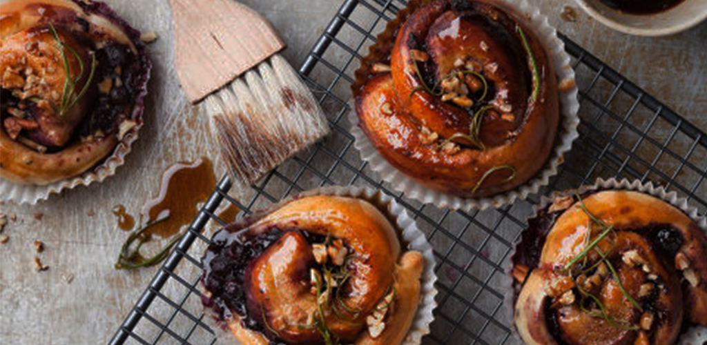

Play
STORY VIDEO
If you are looking for great ways to decorate your home or office, then you know as well as I do that you have nearly countless options. There are so many ways to decorate that it can easily be very overwhelming to find the right things that are in the right budget. As an interior designer, I am often meeting with clients who are overwhelmed with their options
When it comes to buying good cookware, there are a lot of different options. Some people like to buy a matched set of cookware, but seasoned cooks often like to mix and match making an eclectic set that assures them the perfect finish to every dish they create.